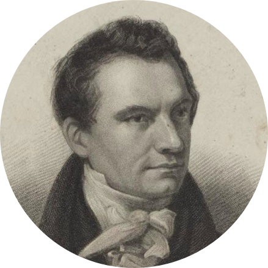
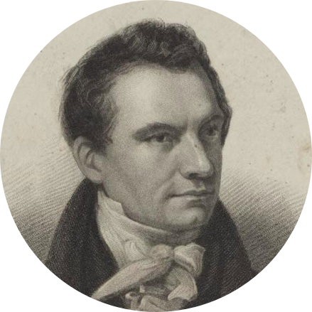

Charles Babbage
Father Of Computer
Father Of Computer
He was the son of Benjamin Babbage, who was a wealthy man. Because his father was so wealthy, Charles was able to receive a wonderful education at very advanced and “elite” schools. He had to move to a “country school” when he was 8 because he needed to recover from a dangerous fever. He also attended King Edward VI Grammar school in Totnes, South Devon. Because of his health, he had to transfer back to private teaching. But then joined a 30-student “closed academy” which was “managed” by Reverend Stephen Freeman. Here, Babbage would study mathematics. He had two private tutors…one was a “clergyman” from Cambridge and another was and Oxford tutor who taught Babbage Classics, so he could be accepted into Cambridge. He was disappointed in the math programs at Cambridge, so he, along with friends of his, decided to form the Analytical Society in 1820.